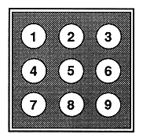

If set, it will play 10 seconds from the beginning of each song and go to the next song.
Switches the time display on the multiplayer screen.
If set, CD tracks are played in random order.
Cancels all functions set with each operation button.
Caution
The program button and shuffle button, AB repeat button and intro button, surround button and pitch & voice button cannot be used simultaneously. If one of the buttons is already set and the other button is set, the previously set button is canceled.